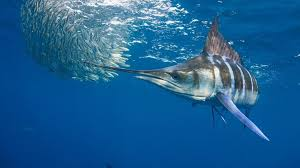
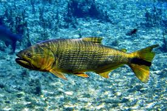
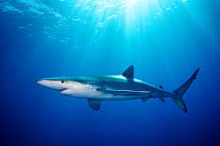

Peixe
| Fotografia | Espécie | O que é |
|---|---|---|
|  | Peixe Espada | Este peixe caracteriza-se pelo corpo comprido e espalmado e pela proeminente crista que lhe assenta na nuca. O ânus situa-se algures sob o 36.º a 40.º raio dorsal, sendo que o espinho posterior ao ânus é pequeno e de formato triangular. |
|  | Peixe Dourado | O dourado é um peixe dos rios do Brasil; é sinônimo de Salminus maxillosus, e é também chamado popularmente doirado, piraju, pirajuba e saijé. Muito apreciado pelos pescadores esportivos, é lendário por sua bravura e resistência uma vez fisgado. Se o salmão é frequentemente citado como o alvo mais cobiçado da pescaria esportiva no hemisfério norte, na América do Sul impera o dourado. Aliás, o dourado, como indica seu nome científico (salminus = pequeno salmão), ocupa o mesmo nicho ecológico de trutas e salmões mesmo sendo de outra ordem (Characiformes), a qual fazem parte a piranha, o lambari, o tambaqui, o pacu, a traíra e o néon. |
|  | Tubarão | Os tubarões se diversificaram em aproximadamente 375 espécies, variando em tamanho desde o menor, o tubarão-lanterna anão, Etmopterus perryi, uma espécie de no máximo 21 centímetros de comprimento, ao tubarão-baleia, Rhincodon typus, o maior, que atinge cerca de 12 metros e que se alimenta por filtragem apenas de plâncton, lulas e pequenos peixes. |